ПРАКТИЧЕСКАЯ РАБОТА № 16
Тема: Создание графических изображений в редакторе “Paint”
Цель: Научиться создавать графические изображения.
Выполнение работы:
Задание 1.
Создайте простейшие рисунки по образцу.
Установи размер страницы 900 на 600 пикселей (РИСУНОК > АТРИБУТЫ) Залей страницу голубым цветом. Используя инструмент Карандаш, который рисует линии в один пиксель толщиной, нарисуй облака и волны. Используя залитый эллипс и линии в три пикселя толщиной, нарисуй солнце. Закрашенным многоугольником нарисуй лодку и парус. Лишние детали можно стирать ластиком или выделять и удалять кнопкой Delete.
|
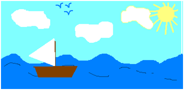 |
Нарисуй снеговика, собрав его из отдельных деталей. Вторую руку – скопируй. Глаза нарисуй большой круглой кистью. |
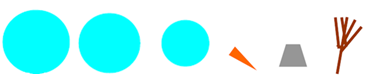 |
Нарисуй одну черную окружность в 3 пикселя толщиной. Скопируй её 4 раза и залей в синий, зеленый, красный и жёлтый цвета. Собери их вместе, чтобы получились олимпийские кольца. |
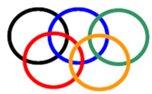 |
Нарисуй месяц, наложив друг на друга два одинаковых круга разных цветов, а потом залей второй круг цветом фона. Таким же наложение кругов друг на друга построй разноцветную мишень. |
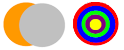 |
Используя многоугольник с заливкой и цветной границей нарисуй одну дощечку для забора. Круглой маленькой кистью набей два гвоздя. Затем нарисуй два параллельных бруска по линии расположения гвоздей. С помощью копирования нарисуй забор.
|
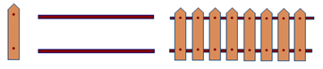 |
Круглой кистью и распылителем нарисуй дерево. Распылителем, карандашом и белой заливкой – траву. Эллипсами и диагональной кистью - и вишни. Совмести все объекты вместе. |
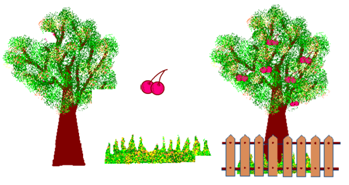 |
Задание 2.
Нарисуйте фигуры с помощью кривых линий по образцу.
|
Инструмент Кривая служит для изображения кривых линий (зигзагов) в три приёма: сначала нужно провести отрезок нужной длины, затем левой кнопкой мыши оттянуть участок Кривой в сторону и зафиксировать щелчком, второй изгиб выполняется аналогично. Используя инструмент Кривая и части эллипсов, нарисуй арбузы, мяч и зонт. |
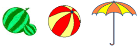 |
Нарисуй рисунки, используя копирование с помощью кнопки Ctrl. Нарисуй сначала только оду ягоду. А затем копируй её, начиная с самой нижней и постепенно продвигаясь вверх. При рисовании второго листа используй отражение копии сверху вниз и слева направо (РИСУНОК Отразить/Повернуть). |
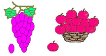 |
Нарисуй змею. Сначала нарисуй окружность тёмногоцвета и залей её внутри светлым тоном. Затем,выдели окружность рамкой с прозрачным фоном иперетаскивай её левой кнопкой мыши при нажатой клавишей Shift. Будет происходить многократное копирование объекта. Затем, нарисуй змее черты лица. |
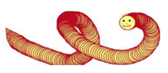 |
Задание 3.
Создайте объемные фигуры из составляющих элементов
|
Конструирование объёмных фигур. Используя объёмные фигуры, например кубики, можнополучать интересные объемные изображения. Для этого нужно сначала нарисовать один кубик внижнем левом углу экрана, используя три разныхоттенка одного цвета для раскраски граней. Этоткубик всегда надо всегда копировать, он запасной. Складывать конструкцию нужно начинать всегда с нижнего заднего ряда и слева направо. |
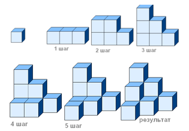 |
Задание 4.
Выполните фигуры, используя инструмент Наклоны и Повороты
|
Чтобы наклонить любой объект на некоторое количество градусов влево или вправо надо выделить объект прямоугольной рамкой, затем открыть в меню пункт РИСУНОК Растянуть/Наклонить и во второй рамке НАКЛОНИТЬ написать количество градусов по горизонтали или по вертикали. Например: 45о по горизонтали и 20о по горизонтали. |
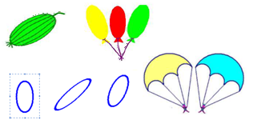 |
Задание 5.
Создайте фигуры с использованием надписей.
|
Чтобы создать надпись нужно использовать инструмент Надпись. Сначала растягивается текстовая рамка, внутри которой есть текстовый курсор. Чтобы изменить вид, размер или начертание шрифта нужна Панель атрибутов текста. Если она не появляется автоматически, то её можно вызвать ВИД Панель атрибутов текста. Закончив ввод и редактирование текста, его можно выделить обычной рамкой и перенести в любое место рисунка |
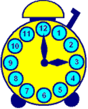 |